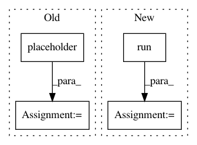

8cf8446b6cb0ba360a687e885c58a623c68de3ed,research/deeplab/core/preprocess_utils_test.py,PreprocessUtilsTest,testReturnPaddedImageWithNonZeroPadValue,#PreprocessUtilsTest#,238
Before Change
[255, 255, 255, 255, 255]]]).astype(dtype)
with self.test_session():
image_placeholder = tf.placeholder(tf.float32)
padded_image = preprocess_utils.pad_to_bounding_box(
image_placeholder, 2, 1, 5, 5, 255)
self.assertAllClose(padded_image.eval(
feed_dict={image_placeholder: image}), expected_image)
After Change
with self.session() as sess:
padded_image = preprocess_utils.pad_to_bounding_box(
image, 2, 1, 5, 5, 255)
padded_image = sess.run(padded_image)
self.assertAllClose(padded_image, expected_image)
// Add batch size = 1 to image.
padded_image = preprocess_utils.pad_to_bounding_box(
np.expand_dims(image, 0), 2, 1, 5, 5, 255)
In pattern: SUPERPATTERN
Frequency: 3
Non-data size: 4
Instances
Project Name: tensorflow/models
Commit Name: 8cf8446b6cb0ba360a687e885c58a623c68de3ed
Time: 2019-03-07
Author: YknZhu@users.noreply.github.com
File Name: research/deeplab/core/preprocess_utils_test.py
Class Name: PreprocessUtilsTest
Method Name: testReturnPaddedImageWithNonZeroPadValue
Project Name: GPflow/GPflow
Commit Name: cc5e7d00a6696a8cf6e40686455e7e034fbf26ff
Time: 2017-09-28
Author: art.art.v@gmail.com
File Name: testing/test_kerns.py
Class Name: TestArcCosine
Method Name: test_nan_in_gradient
Project Name: tensorflow/models
Commit Name: 8cf8446b6cb0ba360a687e885c58a623c68de3ed
Time: 2019-03-07
Author: YknZhu@users.noreply.github.com
File Name: research/deeplab/core/preprocess_utils_test.py
Class Name: PreprocessUtilsTest
Method Name: testReturnOriginalImageWhenTargetSizeIsEqualToImageSize